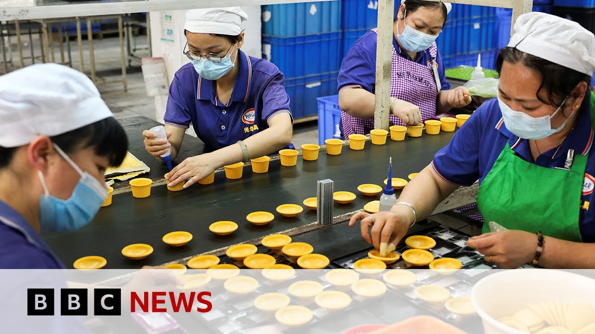

【美中达成协议，将关税削减115% | BBC新闻】
Summary: The US and China agreed to significantly reduce tariffs amid ongoing trade negotiations, marking a temporary de-escalation of their trade war.
摘要： 美中在持续贸易谈判中同意大幅削减关税，标志着贸易战的暂时缓和。

⏱️ Estimated Reading Time: 13 min
The United States and China have sought to end their trade war for now by agreeing to dramatically slash the tariffs they imposed on each other's goods.
美国和中国目前寻求通过大幅削减彼此商品的关税来结束贸易战。
The development follows a successful round of talks in Switzerland at the weekend.
这一进展源于上周末在瑞士举行的一轮成功会谈。
Previously, the White House issued blanket levies on all Chinese imports into the US of 145% with a variety of additional tariffs on specific goods.
此前，白宫对所有中国进口商品征收145%的全面关税，并对特定商品加征额外关税。
Retaliation from Beijing took their tariff rate on imports from America up to 125%.
北京的报复措施将美国进口商品的关税提高至125%。
And in today's breakthrough, both sides agreed to lower levies by 115% for a 90-day period as negotiations continue.
而在今天的突破中，双方同意在谈判期间将关税降低115%，为期90天。
US Treasury Secretary Scott Bassant said both sides saw the need for trade between the two powers to continue.
美国财政部长斯科特·巴森特表示，双方都认为两大经济体之间的贸易需要继续。
The consensus from both delegations this weekend is neither side wants a decoupling.
本周末双方代表团的共识是，任何一方都不希望脱钩。
And what had occurred with these very high tariffs, as Ambassador Greer said, was an equivalent of an embargo.
正如格里尔大使所说，如此高的关税相当于禁运。
And neither side wants that.
双方都不希望如此。
We do want trade.
我们确实希望贸易。
We want more balanced trade.
我们希望贸易更加平衡。
And I think that both sides are committed to achieving that.
我认为双方都致力于实现这一目标。
Our China correspondent, Laura Becker, is in Beijing.
我们的中国记者劳拉·贝克尔在北京。
Our economics editor, Fisel Islam, is here in London.
我们的经济编辑菲塞尔·伊斯兰在伦敦。
They joined me and I started by saying to Laura there wasn't that much expectation around these talks that took place only for two days over the weekend.
他们与我连线，我首先对劳拉说，人们对这次仅持续两天的周末会谈期望并不高。
So whether there was a sense of surprise that they'd reached a deal.
因此，对于他们达成协议是否令人感到意外。
They were very low most analysts had expected them to talk and then come out and announce more talks.
大多数分析师预期他们只会进行讨论，然后宣布更多会谈。
Well they have done that there's a 90-day pause and China has emphasized that there's going to be this economic and trade mechanism for talks in the future.
他们确实这样做了，有90天的暂停期，中国强调未来将建立经贸机制进行谈判。
So perhaps you know this is more talks about talks about talks, but they've come out with an agreement to lower these tariffs, which seems like a significant deescalation from where we were last week.
所以这可能是“关于谈判的谈判的谈判”，但他们达成了降低关税的协议，这似乎是上周以来的重大缓和。
China has definitely softened its tone.
中国的语气明显软化。
Remember, it's been digging its heels and utterly defiant.
此前，它一直态度强硬，毫不妥协。
It will not back down and it will fight this trade war to the end.
它不会让步，并将把贸易战打到底。
Has been the message from the Ministry of Foreign Affairs daily here in Beijing.
这是北京外交部每日传达的信息。
However, behind the scenes, officials are growing increasingly concerned about the impact that these tariffs may have on the economy.
然而，在幕后，官员们越来越担心这些关税对经济的影响。
Remember, China's economy is not growing as fast as it has done in the last two decades.
要知道，中国经济的增长速度已不及过去二十年。
It's facing significant challenges.
它正面临重大挑战。
High youth unemployment, a property crisis, and it's got a spending crisis.
青年失业率高企、房地产危机以及消费低迷。
People don't want to put their hands in their pockets and spend money.
人们不愿掏钱消费。
And a global trade war is not going to encourage them to do that anymore.
而全球贸易战更不会鼓励他们这样做。
So officials here in Beijing saw the danger.
因此，北京的官员看到了危险。
They say the US initiated trade talks.
他们表示是美国发起了贸易谈判。
Washington says the opposite.
华盛顿则持相反说法。
However, they have been managed to sit down.
然而，他们设法进行了会谈。
They had like seven or eight hours of talks on Saturday, a few more on Sunday.
他们在周六进行了约七八个小时的会谈，周日又谈了几个小时。
And here we have this agreement.
于是就有了这份协议。
Yes, analysts are surprised.
是的，分析师们感到意外。
Now, I've been looking at reaction across uh different parts of China.
我一直在观察中国各地的反应。
Some say this is a glimmer of hope between uh the US and China going forward.
有人认为这是美中关系未来的一线希望。
However, others are slightly more cautious, saying they're doing a deal for now, but doing a wider trade deal over the next 90 days and trying to pin down the major problem, which is the US thinks that Beijing sells it far too much.
但也有人更为谨慎，称目前只是达成临时协议，未来90天将寻求更广泛的贸易协议，并试图解决主要问题——美国认为北京对美出口过多。
Remember, China sells the US four times the amount uh than the US buys.
要知道，中国对美出口是美对华出口的四倍。
So, there's this major imbalance that Donald Trump does not like, that Donald Trump definitely wants to target.
因此，这种严重失衡是特朗普不喜欢的，也是他决心要解决的。
So getting to the bottom of a deal to balance that in a way that Washington and Beijing can agree on will be far more difficult in terms of the now though Fisel this deal that has been struck China also saying that these tariff cuts are in the common interests of the entire world.
因此，达成一项平衡贸易的协议，让华盛顿和北京都能接受，将更加困难。不过菲塞尔，中国还表示此次关税削减符合全世界的共同利益。
So what effect will this deal have not only on China and the US but on the global economy?
那么这项协议不仅对美中，对全球经济会产生什么影响？
Well, Lucy, you had the situation where the world's two biggest economies were kind of fronting up like rutting stags and essentially over 100% tariffs.
露西，此前世界两大经济体就像发情的雄鹿一样对峙，关税基本超过100%。
You have prohibitive levels of tariff.
关税高到令人望而却步。
The trade simply wasn't flowing.
贸易根本无法进行。
And we've se seen that in terms of the cross-pacific traffic, cargo traffic, container ships going into ports like LA and Seattle basically just drying up and the few ships that were sailing having very little cargo on them at these prohibitive rates.
我们在跨太平洋货运中看到了这一点，进入洛杉矶和西雅图等港口的集装箱船基本枯竭，少数仍在航行的船只载货量也极少，因为关税高得离谱。
There was some acknowledgement of that actually in terms of what we heard from the US and Chinese side.
从美中双方的发言中可以看出，他们承认了这一点。
So what you've seen is a wind back from the additional tit fortat retaliation process that we saw really over the past month since so-called liberation day and you're left trying to divine um how much of this is going to go on how much of this is an end to trade hostilities an end to the trade war or is it just a truce and a ceasefire and I think it's a little bit difficult to actually unpick because there's all sorts of different tariffs which is stacked upon each other and you have to sort of decipher what's going on and slightly different things are being said by the Chinese and the Americans but the basic picture is this those tripledigit tariffs are down to uh around 10% for now for 90 days set to go up to about 30% after 90 days depends on some sort of negotiation.
因此，我们看到过去一个月自所谓“解放日”以来的额外报复性措施有所缓和，但人们仍在猜测这能持续多久，是贸易敌对的结束、贸易战的终结，还是仅仅停火休战。我认为这有点难以厘清，因为各种关税叠加在一起，必须解读当前情况，而中美双方的说法略有不同。但基本情况是：三位数的关税目前降至约10%，为期90天，之后可能升至30%，具体取决于谈判。
These are still pretty high levels compared to normality but they're obviously a lot better not just for the two countries but for the rest of the world uh than had been 145% for example.
与正常水平相比，这些关税仍然很高，但显然比之前的145%好得多，不仅对两国，对世界其他地区也是如此。
So that's where we stand.
这就是目前的状况。
But I do not uh discern or divine from these uh statements that some of the things that the Americans targeted, for example, the subsidies that China offers to its industry, its exchange rate policy, all these sorts of, you know, that they've managed to get rid of most of the tariffs and leave, if you like, 24% up for percentage points up for negotiation.
但我从这些声明中并未看出美国针对的一些问题——例如中国对产业的补贴、汇率政策等——已得到解决。他们只是设法取消了大部分关税，留下约24个百分点供谈判。
There's also uh additional sectoral tariffs that apply to the rest of the world.
还有其他针对世界其他地区的行业关税。
they still will apply to China.
它们仍将适用于中国。
There isn't much of a Chinese trade in cars with the US, for example, though.
不过中美汽车贸易量不大。
Um, and that's one of the main areas.
这是主要领域之一。
But we're still waiting for the tariffs on semiconductors, for example, or pharmaceuticals.
但我们仍在等待半导体、药品等领域的关税调整。
So, you know, there are there are still a lot of unknowns.
因此仍有许多未知数。
This is a clear directional shift, as Laura says, away from um what seems to be just ongoing escalating escalating tit for tat.
正如劳拉所说，这是明确的转向，远离看似不断升级的以牙还牙。
We're definitely in the deescalation zone.
我们确实处于缓和阶段。
um what this does to the other participants in what is a global trade war who now face uh the same tariff as China at 10% for 90 days but prospectively could face higher tariffs after the end of this 90-day period.
这对全球贸易战的其他参与者有何影响？他们目前面临与中国相同的10%关税，为期90天，但90天后可能面临更高关税。
Uh that is another that is another question and I'll just leave you with this which is it was said at the time when Chinese retaliated so aggressively it was said by the white house you know do not retaliate that is the best strategy here and perhaps the UK deal would be an example of that well I think perhaps in Beijing they'll be thinking that the heavy retaliation the the the like for like the tit for tat the dollar fordoll retaliation we've seen has brought the Americans to the table partly because of the reaction of financial markets bond markets in particular about a month ago.
这是另一个问题。我想说的是，中国当时如此强硬地报复，白宫曾表示“不要报复，这才是最佳策略”，或许英国协议就是例子。但北京可能认为，我们看到的重拳报复、以牙还牙、以美元还美元的做法，部分是因为约一个月前金融市场（尤其是债券市场）的反应，才让美国回到谈判桌。
That's when we saw the origins of this turnaround and what's come to fruition today by those talks in Geneva.
这就是转折的起源，也是日内瓦会谈今日成果的由来。
And Laura, just briefly for ordinary Chinese people, you mentioned the economy is already struggling with the property crisis.
劳拉，简单谈谈普通中国人的情况，你提到经济已因房地产危机而举步维艰。
Youth unemployment's very high.
青年失业率很高。
I know you've traveled around the country talking to people.
我知道你走访全国，与人们交谈。
What are their concerns going forward?
他们未来的担忧是什么？
I think when it the main concern first of all stability I mean we've been putting in calls here and I know that my team have been speaking to a number of people who to get the reaction and one of one person told us okay fine not about 50 60% of my business goes to the United States but actually uh even when they've lifted the tariffs I don't care and that is because I want stability I might just look for other markets what we have been finding is a lot people still looking for other markets because they're worried even if there's a ceasefire in this trade war for now.
我认为首要担忧是稳定。我们一直在打电话联系，我的团队也与许多人交谈以获取反馈。有人告诉我们：“好吧，我50%-60%的业务在美国，但即使他们取消关税，我也不在乎，因为我需要稳定，我可能会寻找其他市场。”我们发现很多人仍在寻找其他市场，因为他们担心即使贸易战暂时停火。
What happens in the future?
未来会发生什么？
What happens when Donald Trump h and the United the United States decides to fall out with China again?
如果特朗普和美国再次与中国闹翻怎么办？
I think there's a fear that this is an ongoing problem here in China.
我认为人们担心这在中国是一个持续的问题。
They've already diversified away much of their trade away from the United States.
他们已经将大部分贸易从美国转移。
I think that's a trend that will
我认为这一趋势将